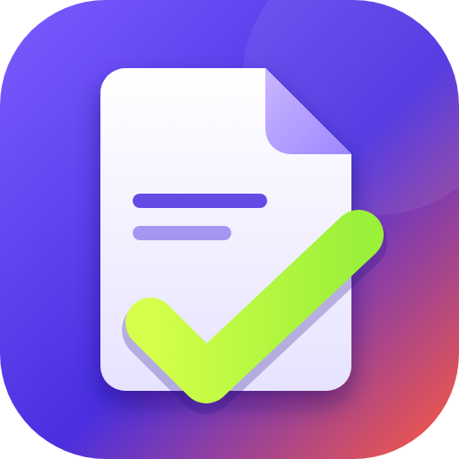

PDF DoEvery PDF tool you need.
Private by design.
A free PDF studio for Windows that runs as its own Microsoft Edge app window. No sign-in, no cloud, no uploads - your files never leave your computer.

Features
Read
Continuous, single, two-page and book layouts, night and sepia modes, thumbnails, bookmarks, full-text search, presentation mode, read aloud, tabs.
Annotate
Highlight, underline, strikethrough, pen, shapes, arrows, measure tool, text boxes, sticky notes, stamps, undo and redo.
Edit
Rewrite existing text in place, add text with any font (bundled, your own .ttf/.otf, or installed), insert images, signatures, whiteout, links.
Pages
Drag to reorder, rotate, delete, duplicate, extract, split, crop, resize, page numbers, headers/footers, Bates numbers, watermarks.
Merge
Combine PDFs and images with per-file page ranges, drag ordering and sorting by name, date or size.
Compare
Side by side, overlay and swipe views with a word-level text diff and an HTML report.
Convert
PDF to Word, PNG/JPG, text, Markdown and HTML; images and text to PDF; offline OCR to searchable PDF.
Protect
AES-256 password protection with permission flags, true redaction, flatten, compress, sanitize, metadata editing.
Forms
Fill text fields, checkboxes, dropdowns and radio groups; add new fields; flatten.
PDF to Word that keeps your layout
A local conversion engine (PyMuPDF + bundled Tesseract OCR) rebuilds each page so the Word file keeps the same page count, text placement, images and equations. Scanned PDFs are handled with OCR. LaTeX papers, invoices and web prints are supported. Nothing is uploaded.


Watch: how to use PDF Do
A 3-minute step-by-step walkthrough with voiceover and subtitles. Open on YouTube
How to use PDF Do
- Download and install. Click Download for Windows and run
PDFDoSetup.exe. It installs for your user only, with no admin rights. If Windows SmartScreen shows a warning, click More info, then Run anyway. - Open PDF Do. Use the Desktop or Start menu shortcut. It opens in its own window and needs no account or internet.
- Open a PDF. Click Open a PDF (or press Ctrl+O), or drag files onto the window. You can also right-click a PDF in Explorer and choose Open with → PDF Do. Several files open as tabs.
- Pick a tool. Use the left sidebar: Read, Annotate, Edit, Pages, Merge, Compare, Convert, Protect, Forms. Press Ctrl+K to search every tool by name.
- Annotate or edit. In Annotate, choose highlight, pen, shapes or notes and draw on the page. In Edit, click existing text to rewrite it, or add new text with any font, color and size.
- Organize pages. In Pages, drag thumbnails to reorder, and rotate, delete, extract or split. In Merge, add several PDFs or images and combine them into one file.
- Convert. In Convert, choose Word, images, text, Markdown or HTML and click convert. Use Recognize text to make a scanned PDF searchable.
- Protect. In Protect, set a password, redact sensitive text or compress the file.
- Save. Click Save (Ctrl+S) to write your changes into the PDF. Unsaved work is recovered if the app closes unexpectedly.
Support PDF Do
PDF Do is free and has no ads in the app. If it saves you time, scan the QR code with any UPI app (PhonePe, Google Pay, Paytm, BHIM), or buy me a coffee.
Opening this page on your phone? Tap “Pay with UPI app” — you can’t scan a QR shown on the same phone.